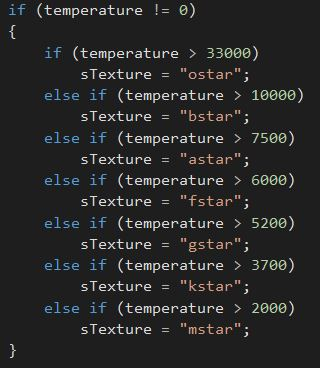
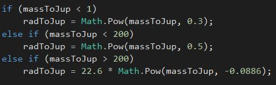
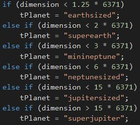
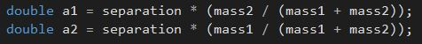
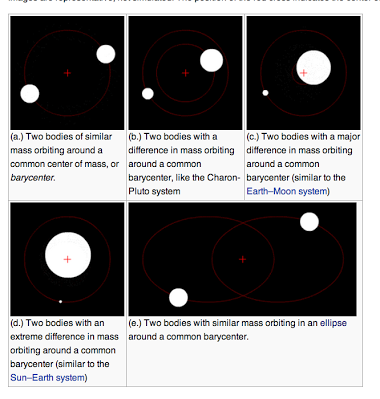

We found out many interesting relations between celestial bodies characteristics, in order to compute an estimation of parameters that were missing from our dataset.
First of all, we found out that the mass of a star can be computed by eleveting its radius to the power of 0.78. When both these parameters where missing, we set a radius equal to the Sun one.
We found that, if the spectral type of a star is missing from the dataset, it can be estimated by its mass and temperature (or only temperature, that is the method we used, see figure).
In order to compute the habitable zone of a star, its luminosity is needed, and it can be computed by multiplying the radius of the star elevated to the power of 2 and the temperature of that star elevated to the power of 4.
Next, the habitable zone begins at 0.95 * luminosity and it ends at 1.4 * luminosity. The habitable zone is the zone in which it is possible, for conditions generated by star, to find water in liquid state, that is the fundamental prerequisite to find life.
We added a tab in which the stars similar to our Sun can be visualized. For this purpose, we used the solar-type definition (i.e. stars with spectral type between F8V and K2V), that is different from the solar-analog and solar-twin definitions (much more restrictive).
Last but not least, we also had to add a model of 3D stars placed in the space at the proper (x,y,z) distance from our Sun. For this purpose, the parameters "right ascension" and "declination" are needed (in our dataset they are relative to the Earth position), in order to compute the distance following this algorithm: link.
First of all, we found out that, when the radius of a planet is missing, it can be computed (estimation, of course) by its mass (mass is relative to the Jupiter one, in our dataset), depending on the mass, as it is visible in the next figure.
Then, we add to classify the planets in an appropriate way, in order to apply a texture to them (planets can be distinguished in earth-sized, superearth, minineptune, neptune-sized, jupiter-sized, superjupiter). To classify them, we used the method described on course site (6371 km is Earth radius).
Last but not least, we used a relation between semi-major axis of orbit and period of revolution in years of a planet in order to find the former when it is missing from the dataset (it is fundamental to draw the orbit of a planet around its star, when is totally missing, we set it equal to the Earth one). In fact, the semi-major axis can be found by elevating the period in years to the power of 0.67.
Since we are graduate students, we were asked to deal with both binary and trinary systems. In order to represent them in 3D, it is necessary to do some calculations.
We found out that in a binary system the two stars orbit around a center of mass, like planets do the same around their proper star. In our dataset we have the separation parameter (also called semi-major axis) in astronomical units (149600000 km), that represents the sum of the two semi-major axis of the stars within this orbit.
To compute the semi-major axis of each star, it is necessary to correlate them with the mass of the stars, with the formula in next figure. The biggest star orbits nearer to the center of mass than the smallest one.
In the last figure, there is an example of how two spheres are placed around a center of mass. A trinary system is a sort of a special case of a binary system, because it has the same separation parameters, but it is treated like a binary system containing a star and as second star another binary system (whose mass used to compute the center of mass is the sum of the two masses).
We added a couple of recent new discoveries made on exoplanetary systems in our visualization, but only in a summarized version. Here it is possible to find the link to the whole articles talking about these new discoveries.
ALPHA CENTAURI: http://www.skyandtelescope.com/astronomy-news/proxima-centauri-b-likely-a-desert-world/
TAU CETI: http://www.skyandtelescope.com/astronomy-news/four-exoplanets-may-orbit-nearby-sun-like-star/